정보통신기사(구) (2019-03-09 기출문제)
1과목: 디지털 전자회로
1. 다음 중 정전압 회로에 대한 설명으로 옳은 것은?
- 입력신호의 에너지를 증가시켜 출력 측에 큰 에너지의 변화로 출력하는 회로
- 교류전압을 사용하기 적당한 직류전압으로 변환하여 주는 회로
- 출력 내에 포함되어 있는 리플성분을 제거시켜 일정한 크기의 전압을 유지시키는 회로
- 입력전압, 출력부하 전류 및 온도에 상관없이 일정한 직류 출력 전압을 제공하는 회로
(정답률: 68%)

2. 바이어스(Bias) 전압에 따라 정전 용량이 달라지는 다이오드는?
- 제너(Zener) 다이오드
- 포토(Photo) 다이오드
- 바렉터(Varactor) 다이오드
- 터널(Tunnel) 다이오드
(정답률: 78%)
3. 다음 정전압 회로에서 출력전압(Vc)으로 맞는 것은? (단, VZ=V∫이다.)
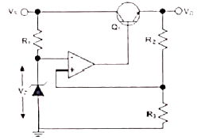
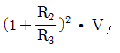
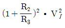
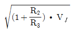
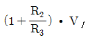
(정답률: 70%)
4. 다음은 BJT 증폭기 회로를 나타내었다. 커패시터 CE를 사용한 목적으로 적절한 것은?
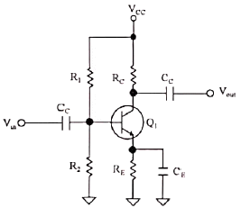
- 증폭기의 이득을 증가시킨다.
- 리플성분을 감소시킨다.
- 직류성분을 통과시킨다.
- 병렬궤환을 발생한다.
(정답률: 65%)
5. 궨한을 걸지 않았을 때 전압 이득이 30이고 고역 차단 주파수가 20[kHz]인 증폭기에 궤환을 걸어 전압 이득이 20으로 되었다면, 궤환시의 고역 차단 주파수는?
- 10[kHz]
- 20[kHz]
- 30[kHz]
- 40[kHz]
(정답률: 65%)
6. 다음 연산증폭기에서 R1=R2=100[kΩ], Rf=25[kΩ]이고, V1=2[V], V2=4[V]일 때 출력전압 Vo
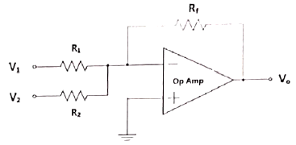
- -1.3[V]
- -1.5[V]
- -1.7[V]
- -2.0[V]
(정답률: 71%)
7. 다음 회로에서의 출력 파형으로 옳은 것은?
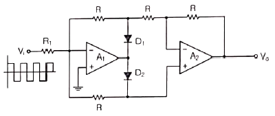
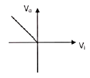
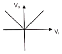
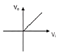
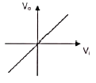
(정답률: 78%)
8. 발진회로와 증폭회로의 설명으로 틀린 것은?
- 발진회로와 증폭회로는 적절한 직류전원이 공급되어야 한다.
- 발진회로와 증폭회로 모두 적절한 궤환회로를 적용할 수 있다.
- 발진회로와 증폭회로는 출력파형에 왜곡이 발생할 수 있다.
- 발진회로와 증폭회로는 외부에서 입력되는 교류신호가 필요하다.
(정답률: 70%)
9. 다음 중 RC 궤환발진기의 종류 중 빈 브리지(Wien Bridge)발진기에 관한 설명으로 옳은 것은?
- 3단으로 구성된 위상 선행회로를 궤환으로 사용하고, 기본 증폭기로는 페루프 전압이득이 29인 반전증폭기를 사용하는 발진기이다.
- 발진기에서 발생되는 발진주파수는
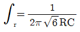
이다. - 회로에서 발진이 일어나기 위해서는 정궤환 루프의 위상천이가 0°이고 루프이득이 0이어야 한다.
- 사인과 발진기의 일종으로 지상-진상회로로 구성되며, 발진에 필요한 증폭기 이득은 3이다.
(정답률: 50%)
10. 다음 그림과 같은 회로에서 결합계수가 0.5이고, 발진주파수가 200[kHz]일 경우 C의 값은 얼마인가? (단, π=3.14 이고, L1=L2=1[mH]로 기징한다.)
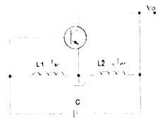
- 211.3[uF]
- 211.3[pF]
- 422.6[uF]
- 422.6[pF]
(정답률: 68%)
11. 다음 중 정보 전송에서 반송파로 사용되는 정현파의 위상에 정보를 싣는 변조 방식은?
- PSK
- FSK
- PCM
- ASK
(정답률: 79%)
12. 다음 중 AM방식과 비교한 FM방식에 대한 설명으로 틀린 것은?
- 단파 대역에 적당하지 않다.
- 수신의 충실도를 향상시킬 수 있다.
- 잡음을 보다 감소시킬 수 있다.
- 피변조파의 점유주파수대역이 좁아진다.
(정답률: 79%)
13. 다음 중 아날로그 신호로부터 디지털 부호를 얻는 방법이 아닌 것은?
- PM(Phase Modulation)
- DM(Delta Modulation)
- PCM(Pulse Code Modulation)
- DPCM(Differential Pulse Code Modulation)
(정답률: 60%)
14. 일정시간 동안 200개의 비트가 전송되고, 전송된 비트 중 15개의 비트에 오류가 발생하면 비트 에러율(BER)은?
- 7.5[%]
- 15[%]
- 30[%]
- 40.5[%]
(정답률: 85%)
15. 다음 중 높은 주파수 성분에 공진하기 때문에 생기는 펄스 상승부분의 진동 정도를 무엇이라 하는가?
- 새그(Sag)
- 링잉(Rigning)
- 언더슈트(Undershoot)
- 오버슈트(Overshoot)
(정답률: 79%)
16. 그림과 같은 회로의 전달 특징은? (단, VR1＜VR2)
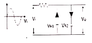
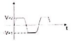
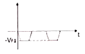
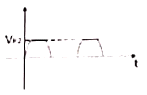
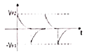
(정답률: 79%)
17. 2진수 1110을 2의 보수로 변환한 것으로 맞는 것은?
- 1010
- 1110
- 0001
- 0010
(정답률: 81%)
18. 다음 회로에서 정논리의 경우 게이트 명칭은?
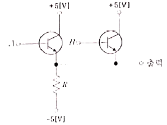
- AND 게이트
- OR 게이트
- NAND 게이트
- NOR 게이트
(정답률: 77%)
19. 다음 그림과 같은 회로의 명칭은?
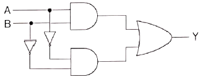
- 일치 회로
- 시프트 회로
- 카운터 회로
- 다수결 회로
(정답률: 77%)
20. 다음 중 전기산기(Full Adder)에 대한 설명으로 옳은 것은?
- 아랫자리의 자리올림을 더하여 그 자리 2진수의 덧셈을 완전하게 하는 회로이다.
- 아랫자리의 자리올림을 더하여 홀수의 덧셈을 하는 회로이다.
- 아랫자리의 잘리올림을 더하여 짝수의 덧셈을 하는 회로이다.
- 자리올림을 무시하고 일반계산과 같이 덧셈을 하는 회로이다.
(정답률: 86%)
2과목: 정보통신 시스템
21. 정보통신시스템의 기본 구성에서 데이터전송계에 속하지 않는 것은?
- 중앙처리장치
- 전송회선
- 단말장치
- 통신제어장치
(정답률: 77%)
22. 다음 중 제4세대 이동통신서비스에 가장 가까운 기술규격은?
- IMT-2000
- WiFi
- LTE
- Bluetooth
(정답률: 92%)
23. 교환국 수가 n일 때 그물형(Mesh) 통신망의 중계 회선수는?
- n
- n(n-1)/2
- n/2
- n-1
(정답률: 94%)
24. 단말과 단말 사이를 각각의 회선으로 연결한 형태의 통신망은?
- 원형
- 트리형
- 메쉬형
- 버스형
(정답률: 89%)
25. 프로토콜에 관한 설명 중 틀린 것은?
- 컴퓨터를 이용한 온라인(On-Line) 시스템 등장 이후 필요성이 제기되었다.
- 프로토콜의 기본구성은 구문(Syntax), 패스(Path), 의미(Semantics)로 분류된다.
- 통신 프로토콜의 표준화가 제기되면서 국제전기통신연합(ITU)에서 공주패킷교환망용 X.25을 표준화하였다.
- 기능별 계층(Layer)화 프로토콜 기술을 채택하는 네트워크 아키텍처로 발전하게 되었다.
(정답률: 90%)
26. HDLC 프로토콜에서 S-프레임의 명령어와 거리가 먼 것은?
- Receive Ready(RR)
- Request Disconnect(RD)
- Reject(REJ)
- Selective-Reject(SREJ)
(정답률: 69%)
27. 인터넷 프로토콜 중 TCP/IP 계층은 OSI 모델 7 계층 중 각각 어느 계층에 대응되는가?
- 물리계층-데이터링크계층
- 네트워크계층-세션계층
- 전송계층-물리계층
- 전송계층-네트워크계층
(정답률: 86%)
28. 정보통신 표준에서 표준규정에 해당되지 않는 것은?
- 권고 표준
- 기본 표준
- 기능 표준
- 시험 표준
(정답률: 60%)
29. 다음 중 ITU-T에 관한 내용과 거리가 먼 것은?
- CCITT의 후신이다.
- 전기통신일반에 관한 표준을 제정한다.
- 무선 통신시스템에 관한 표준을 제정한다.
- 전화 및 데이터 통신시스템에 관한 표준을 제정한다.
(정답률: 74%)
30. 부가가치통신망(VAN)의 출현배경과 거리가 먼 것은?
- 정보저장용량의 증대
- 아날로그 정보처리기술의 발달
- 정보통신 응용분야의 다양화
- 정보처리 속도의 향상
(정답률: 87%)
31. 기존의 인터넷 통신망에서 고속화의 장애 요소 중 하나인 LPM(Longest Prefix Matching) 문제를 해결하기 위하여 LDP(Label Distribution Protocol)에 의해 레이블을 분배하여 레이블을 기반으로 스위칭하는 방식은 무엇인가?
- PPP
- MPLS
- HDLC
- DHCP
(정답률: 74%)
32. FM 피변조파의 최대 주파수 편이가 60[kHz], 최대 변조 신호 주파수가 15[kHz]일 때 FM 변조지수의 얼마인가?
- 3
- 4
- 5
- 6
(정답률: 91%)
33. 센서 노드에서 실제로는 아무것도 전송되지 않지만 데이터 수신을 위해 전송 채널을 계속 감시해야 하는 것을 무엇이라고 하는가?
- 유휴 리스닝(Idle Listenong)
- SMAC(Sensor Medium Access Control)
- 트랜스시버(Transceiver)
- 지그비(Zigbee)
(정답률: 78%)
34. USN(Ubiquitous Sensor Nework) 구성 요소 중 감지된 센싱 정보를 취합하거나, 이벤트성 데이터를 센서 네트워크 외부로 연계하고 관련센서 네트워크를 관리하는 노드를 무엇이라고 하는가?
- 싱크 노드
- 센서 노드
- 릴레이 노드
- 게이트웨이
(정답률: 59%)
35. 지능형교통체계(ITS) 서비스를 위해 차량탑재장치(OBE, On Board Equipment)와 노변기지국(RSE, Road Side Equipment) 간 통신망으로 가장 적합한 것은?
- HFC(Hybrid Fiber and Coaxia)
- DSRC(Dedicated Short Range Communication)
- WiFi
- FTTC(Fiber To The Curb)
(정답률: 79%)
36. 정보통신시스템 계획 중 아래 내용에 해당하는 단계는?
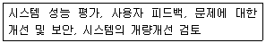
- 시스템 설계
- 시스템 구현
- 시스템 시험
- 시스템 유지보수
(정답률: 75%)
37. 통신망(Network) 관리 중 아래 내용에 해당되는 것은?
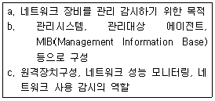
- SNMP(Simple Network Management Protocol)
- TMN(Telecommunications Management Network)
- SMAP(Smart Management Application Protocol)
- TINA-C(Telecommunication Information Network Architceture Consortium)
(정답률: 79%)
38. 통신망 관리 시스템 네트워크 내에서 소통되는 호의 상황, 설비 상황이나 그의 변동상황을 파악ㆍ관리하며 네트워크의 설비 설계, 폭주 관리 설비, 소통관리 등의 역할을 갖는 시스템은?
- 가입자 시설 집중 운용 분실 시스템(Subscrilxer Iine Maintenance and Operation System)
- 장기리 회선 감시 제어 및 운용 관리 시스템
- 트래픽 집중 관리 시스템(Centralized Traffic Management System)
- 네트워크 트래픽 시스템(Network Traffic System)
(정답률: 73%)
39. 이동통신 시스템 중 GPS(Global Position System)를 기반으로 하는 동기식 이동통신 시스템으로 옳은 것은?
- AMPS
- GSM
- CDMA
- WCDMA
(정답률: 69%)
40. 관리하고자 하는 네트워크 장비들에 대한 감시와 제어를 수행하는 시스템은?
- 에이전트
- 네트워크 관리 시스템
- 호스트
- 네트워크 장비
(정답률: 89%)
3과목: 정보통신 기기
41. 다음 중 컴퓨터가 터미널에 전송할 데이터가 있는가를 확인하는 동작은?
- Polling
- Selection
- Daisy-Chain
- NAK
(정답률: 77%)
42. 출력된 문서나 그림 등을 이미지 형태로 컴퓨터에 입력을 가능하게 하는 장치는?
- 플로터
- 스캐너
- 디지타이저
- 마우스
(정답률: 79%)
43. 다음 중 통신 제어장치(CCU)의 종류에 해당하지 않는 것은?
- CCP(Communication Control Processor)
- TCU(Transmission Control Unit)
- BEP(Back End Processor)
- RP(Remote Processor)
(정답률: 53%)
44. 다음 중 멀티 포트 모뎀에 대한 설명으로 가장 알맞은 것은?
- 짧은 거리에서 경비를 결감하기 위해 사용한다.
- 시분할 다중화기와 고속 동기식 모뎀을 이용한다.
- 약간의 전사처리능력을 부가하고 데이터 압축기능이 부가된 것이다.
- 비교적 원거리 통신용으로 개발된 모뎀이다.
(정답률: 70%)
45. 신호의 2진 표시에서 1일 때는 전압이 발생하고 0일 때는 발생하지 않는 신호는?
- 단극성 NRZ
- 양극성 RZ
- 맨체스터부호
- CMI 부호
(정답률: 72%)
46. 다음 중 집중화 방식의 특징이 아닌 것은?
- 송수신 할 데이터가 없어도 타임슬롯을 할당한다.
- 채널을 효율적으로 사용할 수 있다.
- 단말기의 속도, 터미널의 접속 개수 등을 자유롭게 변경할 수 있다.
- 패킷교환 집중화 방식과 회선교환 집중화 방식이 있다.
(정답률: 75%)
47. 다음 중 라우터의 이더넷(Ethernet) 인터페이스인 접속 포트에 활용되지 않는 것은?
- TP
- AUI
- DVI
- MAU
(정답률: 82%)
48. 다음 중 라우터에 대한 설명으로 옳은 것은?
- OSI 3계층 레벨에서 프로토콜 처리 능력을 갖는 Network간 접속 장치이다.
- 단말기 사이의 거리가 멀어질수록 감쇄되는 신호를 재생시키는 장비이다.
- OSI 2계층에서 LAN을 상호 연결하여 프레임을 저장하고 중계하는 장치이다.
- OSI 4계층 이상에서 동작하며, 서로 다른 데이터 포맷을 가지는 정보를 변환해 준다.
(정답률: 82%)
49. 전화기의 구성 요소 중 수화기에 대한 설명으로 틀린 것은?
- 진동판, 영구자석, 유도교열로 구성되어 있다.
- 음성의 전기적 신호를 음파로 재생하는 장치이다.
- 음성의 전기적신호는 전동판을 물리적으로 진동시킨다.
- 전동판과 탄소입자의 진동에 의하여 변하는 저항값에 의해 직류 전류를 얻는다.
(정답률: 75%)
50. 유선전화망에서 노드가 10개일 때 그물형(Mesh)으로 교환회선을 구성할 경우, 링크 수를 몇 개로 설계해야 하는가?
- 30개
- 35개
- 40개
- 45개
(정답률: 92%)
51. 전자교환기에서 중앙제어장치의 명령에 따라 통화로를 완성하고 감시하는 기능을 하는 것은?
- 트렁크
- 중앙 제어장치
- 통화 제어장치
- 주사 장치
(정답률: 69%)
52. 20개의 중계선으로 5[Erl]의 호량을 운반하였다면 이 중계선의 효율은 몇 [%]인가?
- 20[%]
- 25[%]
- 30[%]
- 35[%]
(정답률: 88%)
53. TV 서비스 중 가정마다 공급되는 초고속 인터넷 망을 통해 다양한 VOD(주문형비디오) 서비스를 즐길 수 있는 멀티미디어 서비스로 전용셋탑박스(중계기)를 설치하면 서비스 업체가 제공하는 미디어 콘텐츠를 언제든 시청할 수 있는 것은?
- 케이블TV
- IPTV
- 스마트 TV
- 유선 TV
(정답률: 86%)
54. 다음은 진폭변조(AM) 무선 송ㆍ수신기외 각도변조(FM, PM) 무선 송ㆍ수신기를 비교 설명한 것으로 적합한 것은?
- 진폭변조는 각도변조보다 증폭기의 직선성이 좋아야 한다.
- 진폭변조파는 각도변조파보다 주파수 대역폭이 광대역이다.
- 진폭변조파는 각도변조파보다 반송파의 진폭이 일정하다.
- 진폭변조나 각도변조나 모두 AGC 또는 AVC가 있어야 한다.
(정답률: 56%)
55. 인공위성이나 우주 비행체는 매우 빠른 속도로 운동하고 있으므로 전파발진원의 이동에 따라서 수신주파수가 변하는 현상은?
- 페이져 현상
- 플라즈마 현상
- 도플러 현상
- 전파지연 현상
(정답률: 87%)
56. CDMA 대역확산 통신기술을 이용하여 다중경로전파 가운데 원하는 신호만을 분리할 수 있는 수신기는?
- 레이크 수신기
- Multi channel 수신기
- 헤테로다인 수신기
- VLR 수신기
(정답률: 83%)
57. 어느 멀티미디어 기기의 전송대역폭이 6[MHz]이고 전송속도가 19.39[Mbps]일 떄, 이 기기의 대역폭 효율값은 약 얼마인가?
- 2.23
- 3.23
- 5.25
- 6.42
(정답률: 89%)
58. 다음 중 멀티미디어의 특징으로 틀린 것은?
- 디지털화
- 통합성
- 단방향성
- 상호작용성
(정답률: 92%)
59. 다음 중 비디오텍스의 구성장치에 해당하지 않는 것은?
- 입력장치
- 정보축적장치
- 통신처리장치
- 트랜스폰디
(정답률: 79%)
60. 다음 중 멀티미디어 응용분야와 가장 거리가 먼 것은?
- 원격회의
- 원격교육
- 원격진료
- 원격검색
(정답률: 91%)
4과목: 정보전송 공학
61. 비주기적인 임의의 파형의 주파수 스펙트럼을 해석하는 방법으로 가장 적절한 것은?
- 퓨리에 급수로 해석한다.
- 펄스 열로 표시한다.
- 델타함수 열로 해석한다.
- 퓨리에 변환으로 해석한다.
(정답률: 77%)
62. 다수의 디지털 신호를 하나의 채널로 전송하는 것을 무엇이라 하는가?
- 다중화
- 표본화
- 양자화
- 부호화
(정답률: 86%)
63. 다음 중 Denso WDM(DWDM)에서 사용하는 파장간격으로 틀린 것은?
- 20[nm]
- 1.6[nm]
- 0.8[nm]
- 0.4[nm]
(정답률: 77%)
64. 사용자 신호마다 서로 다른 코드를 곱해서 구분하여 보내는 다중접속 기술은?
- FDMA
- TDMA
- CDMA
- OFDMA
(정답률: 73%)
65. 전송로의 정적인 불완전성은 시스템의 특성에 의해 발생되는 왜곡인데 이와 관계가 없는 것은?
- 진폭 감쇠 왜곡
- 지연 왜곡
- 특성 왜곡
- 대칭 왜곡
(정답률: 74%)
66. 다음과 같은 전송매체의 표기방법에 대한 설명으로 옳지 않은 것은?
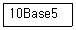
- 전송속도가 10[Mbps]이다.
- 기저대역 전송을 행한다.
- 전송매체가 동축케이블이다.
- 전송거리가 최장 5[km]이다.
(정답률: 84%)
67. 다음 중 코히어런트 광전송 방식에 대한 설명으로 틀린 것은?
- 반송파를 사용하여 광파의 주파수나 위상에 정보를 실어 전송한다.
- 국부발진 광파와 캐리어 광파의 주파수가 틀리면 호모다인 광파다.
- 광의 강약에 의해 신호를 전송하지 않는다.
- 완전한 코히어런트 광이란 단일 파장의 광 즉, 단색광(Monochromatic Light)을 의미한다.
(정답률: 67%)
68. 다음 중 이동통신에서 나타나는 페이딩 현상으로 맞는 것은?
- 이동체의 움직임에 따라 관측점과 파원의 실효 길이가 변화하게 되어 수신 신호 주파수가 변하는 현상이다.
- 신호 전파의 도달 거리 차에 의해 수신 전계강도가 시간적으로 변동하는 현상이다.
- 인접한 이동체간에 동일 주파수 채널을 사용함으로써 발생하는 간섭현상이다.
- 전파가 전송되는 과정에서 다중 반사되어 나타나는 지연 현상이다.
(정답률: 70%)
69. 다음 중 레이더 또는 위성통신에 이용되며, Ka밴드, K밴드, Ku밴드, X밴드, L밴드 등 특수한 용어를 사용하여 밴드를 분류하는 파는 무엇인가?
- 단파
- 마이크로파
- 밀리미터파
- 초단파
(정답률: 84%)
70. 다음 데이터 통신방식 중 반이중 방식의 설명으로 틀린 것은?
- 2선식 전송로를 이용하며 어느 시점 한 방향으로만 데이터를 전송
- 전송 데이터 양이 적을 때 사용
- 데이터 전송방향을 바꾸는데 소요되는 시간인 전송 반전 시간 필요
- 전이중 방식보다 전송효율이 높은 특징을 보유
(정답률: 81%)
71. HDLC 프로토콜에서 사용되는 프레임 내에 제어부를 구성하는 비트들은 사용목적에 따라 3가지의 구성형식을 가지게 되는데 이에 해당되지 않는 것은?
- 감시형식(S-frame)
- 비번호제형식(U-frame)
- 응답형식(R-frame)
- 정보전송형식(I-frame)
(정답률: 69%)
72. 다음 중 전송 제어문자의 내용으로 옳은 것은?
- SYN : 문자 동기 유지
- STX : 헤딩의 시작 및 텍스트의 시작
- ETX : 텍스트의 시작을 표시
- EOT : 전송시작 및 데이터 링크의 초기화 표시
(정답률: 75%)
73. No.7 신호방식 프로토콜 중에서 메시지전달부는?
- OAMP
- TCAP
- ISUP
- MTP
(정답률: 83%)
74. 물리 주소(MAC Address)에 해당하는 IP주소를 얻는데 사용하는 프로토콜은?
- RIP
- ARP
- RARP
- ICMP
(정답률: 53%)
75. 다음 중 TCP(Transmission Control Protocol)의 주요 서비스 기능이 아닌 것은?
- 두 프로세스 간의 연결을 설정, 유지, 종료시키는 기능
- 에러 제어를 위한 메커니즘 제공
- 포트번호를 사용하여 송수신 간 다중연결 허용
- 데이터 표현방식, 상이한 부호체계 간의 변화에 대하여 규정
(정답률: 66%)
76. 다음 중 RIP의 특징으로 틀린 것은?
- 라우팅 정보 전달 방식은 브로드캐스트 방식이다.
- 한 번에 전송 가능한 경로 정보의 크기는 512[kbyte]이다.
- 경로 설정 알고리즘은 거리 벡터 알고리즘을 사용한다.
- 경로 정보에는 서브넷 마스크 값이 포함된다.
(정답률: 56%)
77. 다음 중 라우팅 프로토콜이 아닌 것은?
- BGP(Border Gateway Protocol)
- EGP(Exterior Gateway Protocol)
- SNMP(Simple Network Management Protocol)
- RIP(Roution Information Protocol)
(정답률: 79%)
78. 다음 중 동일한 데이터를 2회 송출하여 수신 측에서 이 2개의 데이터를 비교 체크함으로써 에러를 검출하는 에러 제어 방식은?
- 반송제어 방식
- 연속송출 방식
- 캐릭터 패리티 검사 방식
- 사이클릭 부호 방식
(정답률: 80%)
79. ARQ 방식 중 에러가 발생한 프레임만 재전송하는 기법은?
- Stop-Wait ARQ
- Go Back n ARQ
- Selective Repeat ARQ
- H-ARQ
(정답률: 81%)
80. 다음 OSI 7계층 중 한 노드에서 다른 노드로 프레임을 전송하는 책임을 갖는 층(Layer)은 무엇인가?
- 물리 계층
- 데이터 링크 계층
- 네트워크 계층
- 응용 계층
(정답률: 70%)
5과목: 전자계산기일반 및 정보통신설비기준
81. 다음 중 선택된 트랙(Track)에서 데이터(Data)를 Read 또는 Write하는데 걸리는 시간은?
- Seek Time
- Search Time
- Transfer Time
- Latency Time
(정답률: 56%)
82. 32비트의 데이터에서 단일 비트 오류를 정정하려고 한다. 해밍 오류 정정 코드(Hamming Error Correction Code)를 사용한다면 몇 개의 검사 비트들이 필요한가?
- 4비트
- 5비트
- 6비트
- 7비트
(정답률: 59%)
83. 2진수 7비트로 표현하는 경우 -9에 대해 부호화 절대값, 부호화 1의 보수 및 부호화 2의 보수로 변환한 것으로 옳은 것은?
- 0001001, 0110110, 0110111
- 1001001, 0110110, 1110111
- 1001001, 1110110, 1110111
- 1001001, 0110110, 0110111
(정답률: 70%)
84. 다음 중 자기보수 코드(Self Complement Code)인 것은?
- 3초과 코드
- BCD 코드
- 그레이 코드
- 해밍 코드
(정답률: 64%)
85. 다음의 데이터 코드 중 가중치 코드가 아닌 것은?
- 8421 코드
- 바이퀴너리(Biquniary) 코드
- 그레이(Gray) 코드
- 링 카운터(Ring Counter) 코드
(정답률: 83%)
86. 유일 키를 갖는 자료 1,000개가 키에 의해 오름차순으로 정렬되어 있다. 이진탐색(Binary Search) 방법으로 원하는 자료를 찾고자 할 경우 최대 몇 번의 키 비교를 해야 하는가?
- 5번
- 10번
- 500번
- 1,000번
(정답률: 72%)
87. 다음 운영체제의 방식 중 가장 먼저 사용된 방식은?
- Batch Processing
- Time Slicing
- Multi-Threading
- Multi-Tasking
(정답률: 80%)
88. 다음 보기의 기억장치 중 속도가 가장 빠른 것에서 느린 순서대로 나열한 것으로 맞는 것은?
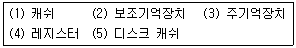
- (4)-(3)-(1)-(5)-(2)
- (4)-(5)-(3)-(1)-(2)
- (4)-(1)-(3)-(5)-(2)
- (4)-(5)-(1)-(3)-(2)
(정답률: 77%)
89. 다음 중 운영체제에 대한 설명으로 틀린 것은?
- 유닉스(Unix) : 네트워크 기능이 강력하며, 다중 사용자 지원이 가능하고, PC에서도 설치 및 운용이 가능한 버전이 있다.
- 리눅스(Linux) : 무료로 다운받아 모든 분야에 무료로 널리 사용할 수 있으며, 윈도우즈와 동일한 환경을 제공한다.
- 윈도우즈(Windows) : 소스가 공개되어 있지 않으며, 많은 사용자들이 보편적으로 사용하고 있다. 서버급 보다는 클라이언트용으로 주로 사용되고 있다.
- 도스(DOS) : 명령어 입력방식으로 불편하며, DOS지원을 위해 메모리와 디스크의 용량에 한계가 있다. 여러 사람이 작업을 할 수 없다.
(정답률: 85%)
90. 메모리에 접근하지 않아 실행 사이클이 짧아지고, 명령어에 사용될 데이터가 오퍼랜드(Operand) 자체로 연산 대상이 되는 주소지정방식은?
- 베이스 레지스터 주소지정 방식(Base Register Addressing Mode)
- 인덱스 주소지정 방식(Index Addressing Mode)
- 즉시 주소지정 방식(Immediate Addressing Mode)
- 묵시적 주소지정 방식(Implied Addressing Mode)
(정답률: 74%)
91. 방송통신설비의 제거명령을 위반한 자에 대한 벌칙규정은?
- 1년 이하의 징역 또는 1천만원 이하의 벌금에 처한다.
- 2년 이하의 징역 또는 2천만원 이하의 벌금에 처한다.
- 3년 이하의 징역 또는 3천만원 이하의 벌금에 처한다.
- 5년 이하의 징역 또는 5천만원 이하의 벌금에 처한다.
(정답률: 82%)
92. 방송통신설비의 기술기준에 관한 규정에서 정의한 ‘특고압’은?
- 7,000볼트를 초과하는 전압
- 5,000볼트를 초과하는 전압
- 2,500볼트를 초과하는 전압
- 직류는 750볼트, 교류는 600볼트를 초과하는 전압
(정답률: 82%)
93. 전기통신기본법에 따라 전기통신설비에 사용하는 장치ㆍ기기ㆍ부품 또는 선조 등을 무엇이라고 하는가?
- 전기통신기자재
- 전기통신회선설비
- 전기통신선로설비
- 전기통신설비재료
(정답률: 72%)
94. 다음 중 인터넷접속역무 제공사업자가 이용사업자에게 공개해야 하는 인터넷접속조건에 해당하지 않는 것은?
- 상호접속료
- 통신망 규모
- 가입자 수
- 라우팅 원칙
(정답률: 45%)
95. 방송통신설비 기술조건 적합조사를 실시하는 경우가 아닌 것은?
- 방송통신설비 관련 시책을 수립하기 위한 경우
- 국가비상사태를 대비하기 위한 경우
- 신기술 및 신통신방식 도입을 위한 경우
- 방송통신설비의 이상으로 광범위한 통신장애가 발생할 우려가 있는 경우
(정답률: 64%)
96. 수급인의 정의로 가장 적합한 것은?
- 도급인으로부터 공사를 하도급받은 공사업자를 말한다.
- 하청인으로부터 공사를 도급받은 공사업자를 말한다.
- 발주자로부터 공사를 하도급받은 공사업자를 말한다.
- 발주자로부터 공사를 도급받은 공사업자를 말한다.
(정답률: 60%)
97. 다음 중 정보통신공사업법령에 의한 ‘용역’의 역무에 해당하지 않는 것은?
- 설계업무
- 시공업무
- 감리업무
- 유지관리업무
(정답률: 57%)
98. 다음 정보통신공사 중 하자담보책임기간이 다른 하나는?
- 철탑공사
- 교환기설치공사
- 개착식 통신구공사
- 위성통신설비공사
(정답률: 74%)
99. 접지체 상단은 지표로부터 수직 깊이가 어느 정도 이상되도록 매설해야 하는가?
- 35[cm]
- 75[cm]
- 100[cm]
- 150[cm]
(정답률: 63%)
100. 다음 중 용어의 정의가 맞지 않는 것은?
- “강전류절연전선”이라 함은 절연물만으로 피복되어 있는 강진류 전선을 말한다.
- “전자파공급선”이라 함은 전파에너지를 전송하기 위하여 송신장치나 수신장치와 안테나 사이를 연결하는 선을 말한다.
- “회선”이라 함은 전기통신의 전송이 이루어지는 유형 또는 무형의 개통적 전기통신로를 말하며, 그 용도에 따라 국선 및 구내선 등으로 구분한다.
- “중계장치”라 함은 선로의 도달이 어려운 지역을 해소하기 위해 사용하는 증폭장치 등을 말한다.
(정답률: 57%)